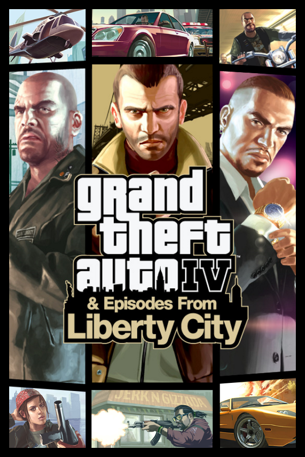

Grand Theft Auto IV
Grand Theft Auto IV
Details
|  | |
| Playtime | Not Played |
| Last Activity | 5/20/2015 18:18:07 |
| Added | 4/24/2025 1:30:35 |
| Modified | 4/30/2025 2:42:27 |
| Completion Status | Not Played |
| Library | Xbox |
| Source | Xbox |
| Platform | Microsoft Xbox 360 |
| Release Date | 12/2/2008 |
| Community Score | 88 |
| Critic Score | 88 |
| User Score | |
| Genre | Action Open world |
| Developer | Rockstar North Rockstar Toronto |
| Publisher | 1C-SoftClub Capcom Rockstar Games |
| Feature | Controller Support Full Controller Support Single Player |
| Links | PCGamingWiki Official site HowLongToBeat IGDB SteamDB StrategyWiki MobyGames Wikipedia WSGF |
| Tag | Automobile Bus Contemporary Direct control Helicopter Motorcycle Naval/watercraft RAGE Realistic Real-Time Third Person |
Description
Grand Theft Auto IV is a 2008 action-adventure game developed by Rockstar North and published by Rockstar Games. It is the sixth main entry in the Grand Theft Auto series, following 2004's Grand Theft Auto: San Andreas, and the eleventh entry overall. Set in the fictional Liberty City, based on New York City, the single-player story follows Eastern European war veteran Niko Bellic and his attempts to escape his past while under pressure from high-profile criminals. The open world design lets players freely roam Liberty City, consisting of three main islands, and the neighbouring state of Alderney, which is based on New Jersey.
The game is played from a third-person perspective and its world is navigated on foot and by vehicle. Throughout the single-player mode, players control Niko Bellic. An online multiplayer mode is also included with the game, allowing up to 32 players to engage in both cooperative and competitive gameplay in a recreation of the single-player setting. Two expansion packs were later released for the game, The Lost and Damned and The Ballad of Gay Tony, which both feature new plots that are interconnected with the main Grand Theft Auto IV storyline, and follow new protagonists.
Development of Grand Theft Auto IV began soon after the release of San Andreas and was shared between many of Rockstar's studios worldwide. The game introduced a shift to a more realistic and detailed style and tone for the series. Unlike previous entries, Grand Theft Auto IV lacked a strong cinematic influence, as the team attempted an original approach to the story. As part of their research for the open world, the development team conducted extensive field research in New York, capturing over 100,000 photographs and several hours of video. The developers considered the world to be the most important element of the game; though not the largest map in the series, they considered it comparable in scope due to its verticality and level of detail. The budget climbed to over US$100 million, making it one of the most expensive video games to develop.
Grand Theft Auto IV was released for the PlayStation 3 and Xbox 360 consoles in April 2008, and for Windows in December. It received critical acclaim, with praise directed at the narrative and open-world design. Grand Theft Auto IV broke industry sales records and became the fastest-selling entertainment product in history at the time, earning US$310 million in its first day and US$500 million in its first week. Considered one of the most significant titles of the seventh generation of video games, and by many critics as one of the greatest video games of all time, it won year-end accolades, including Game of the Year awards from several gaming publications. It is among the best-selling video games with over 25 million copies sold by 2013. The game generated controversy, with criticism directed at the game's depiction of violence and players' ability to drive drunk. Its successor, Grand Theft Auto V, was released in 2013.
Gameplay
Grand Theft Auto IV is an action-adventure game played from a third-person perspective. Players complete missions—linear scenarios with set objectives—to progress through the story. It is possible to have several active missions running at one time, as some require players to wait for further instructions or events. Outside of missions, players can freely roam the game's open world and complete optional side missions. Composed of the fictional city of Liberty City, the world is larger in area than most earlier Grand Theft Auto series entries. At the beginning of the game, players can only explore the first island—composed of Dukes and Broker—with all other islands unlocking as the story progresses.
Players use melee attacks, firearms and explosives to fight enemies, and may run, jump, swim or use vehicles to navigate the game's world. There is a first-person perspective option when using vehicles. In combat, auto-aim and a cover system can be used as assistance against enemies. Should players take damage, their health meter can regenerate by consuming food or drinks, using medical kits, or calling for paramedics. If players commit crimes, law enforcement may respond as indicated by a "wanted" meter in the head-up display (HUD). On the meter, a count of stars indicates the current wanted level. Gaining more stars will cause law enforcement to incapacitate players more aggressively and extends the wanted vicinity area, and is capped at six stars. The player can evade police by travelling outside the wanted vicinity area, after this the wanted meter enters a cool-down mode, law enforcement hunt for the player, and eventually recedes when they are hidden from the officers' line of sight.
The game's cover system allows players to move between obstacles, to fire blindly, aim freely, and target a specific enemy. Individual body parts can also be targeted. Melee attacks include additional moves, such as dodging, blocking, disarming an opponent and counter-attacking. Body armour can be used to absorb gunshots and explosive damage, but is used up in the process. When health is entirely depleted, gameplay stops, and players respawn at the nearest hospital.
The single-player mode lets players control an Eastern European war veteran, Niko Bellic. During the story, Niko meets and befriends various new characters. While free roaming the game world, players may engage in context-specific activities such as bowling or darts, either alone or with friends. Other available activities include a vigilante mini-game, and in-game television programming. Hanging out, answering calls, or completing missions of friends will increase that friend's respect. If their respect is high enough, the player can unlock favours; for example, Niko's cousin Roman owns a taxi service, and can send one of his cabs to take Niko to any destination without a fee. Cabs are always available during gameplay for quick travel to a destination. Throughout the course of the game, players are also faced with morality choices, which alter the storyline appropriately depending on the player's choice. Niko has a cell phone for contacting friends and hanging out with them through activities. The cell phone is also used to access the game's online multiplayer mode, and to enter cheat codes. To access the in-game Internet, which allows Niko to send and receive emails and set up prospective dates with potential girlfriends, Niko can use Internet cafés located around the city. The game also features a subway system, allowing players to quickly traverse through the game's world.
The online multiplayer mode for Grand Theft Auto IV allows up to 32 players to freely roam across the map. Players decide which game mode they wish to play, including deathmatches and street races. Both cooperative and competitive game modes are available, split into ranked and unranked matches. For players to level up through ranks, in-game money has to be earned. The game also features a Free Mode, in which players have the entire map open to explore, with no end goal or mission to complete. Hosts of the game can control many variables, such as police presence, traffic, and weapons. The multiplayer mode was discontinued on Windows in 2020.
Synopsis
Setting
Grand Theft Auto IV takes place in 2008, within an alternate version of Liberty City seen in Grand Theft Auto III. The design of the city focuses on a recreation of four of the boroughs of New York City: Broker (based on Brooklyn), Dukes (Queens), Bohan (The Bronx), and Algonquin (Manhattan). The setting also includes the neighbouring state of Alderney (based on New Jersey). In the story, it is explained that bridges are locked down due to a terrorist threat, and police constantly pursue players if the bridges are crossed. These barricades are lifted as the player progresses the story, allowing them to traverse uninterrupted between islands.
Grand Theft Auto IV is set in the fictional "HD Universe", which mirrors and parodies the real world. The previous games formed fictional universes of their own, which despite having many similarities with the HD Universe, are considered to be different continuities. Hence, the Liberty City depicted in Grand Theft Auto IV is different from its previous renditions, and the game itself serves as a reboot for the series. The new timeline established by Grand Theft Auto IV would continue with two expansion packs, The Lost and Damned and The Ballad of Gay Tony, and a sequel, Grand Theft Auto V, as well as its online component, Grand Theft Auto Online. The handheld game Grand Theft Auto: Chinatown Wars is also considered part of the HD Universe, because it features the same map as Grand Theft Auto IV, except for Alderney.
Niko Bellic, an Eastern European ex-soldier, arrives in Liberty City aboard the cargo ship Platypus to escape his criminal past, pursue the American Dream, and search for a man who betrayed his unit to an ambush during a war ten years prior. Reuniting with his cousin Roman, he discovers that his stories of riches were invented. Roman lives in a small, dirty apartment, owns an unprofitable taxi company, and has gambling debts and disputes with loan sharks. Niko begins assisting Roman with his problems, where he makes criminal contacts in the city. He befriends Yardies second-in-command Little Jacob and is forced to work for Vlad Glebov, Roman's Russian loan shark. Niko eventually kills Vlad upon learning he had slept with Roman's girlfriend, Mallorie.
In retaliation, Niko and Roman are kidnapped by Russian mobsters on orders of their boss Mikhail Faustin and his lieutenant, Dimitri Rascalov. Indifferent to Vlad's murder, Faustin releases them and employs Niko as a hitman. Faustin orders Niko to kill the son of Russian crime lord Kenny Petrović. When Petrović threatens retaliation, Dimitri persuades Niko to assassinate Faustin and satisfy Petrović. However, Dimitri betrays him after the killing and brings Niko to his former employer, Ray Bulgarin, who accuses Niko of stealing from him during a failed human trafficking job years earlier. Niko denies the allegation and a firefight ensues, allowing Dimitri and Bulgarin to escape.
Dimitri's men burn down Niko and Roman's apartment and taxi company, forcing them to flee to Bohan. While Niko finds work with several local drug lords, Dimitri briefly kidnaps Roman in a failed attempt to lure Niko into a trap. Later, Niko discovers that his romantic interest, a woman named Michelle, is an undercover government agent, who then entraps him into working for her superior. In exchange for the murders of known or suspected terrorists, the superior clears Niko's criminal record and aids him with seeking Niko's traitor. Roman receives a large amount of insurance money from the arson, which he uses to rebuild the business and buy an apartment in Algonquin. Roman also proposes to Mallorie, who accepts.
While working for the Irish Mob, Niko befriends gangster Patrick "Packie" McReary, helping him and his brothers carry out various jobs, including a major bank robbery. Niko is later hired by Ray Boccino, a caporegime in the Pegorino crime family, to oversee a diamond deal, which goes awry. Boccino repays Niko by helping him find his ex-comrade Florian Cravic, now known as Bernie Crane, who claims he was not the one to betray their unit. Niko realises that the traitor was Darko Brevic, the only other survivor. Niko continues working for the Mafia and earns the trust of Don Jimmy Pegorino, who orders him to kill Boccino after suspecting him of being a police informant. Niko also helps Packie kidnap Don Giovanni Ancelotti's daughter to ransom her for the diamonds, but Bulgarin intercepts the exchange. In the ensuing firefight, the diamonds are lost.
Eventually, government agents find Darko in Romania and bring him to Liberty City for Niko to decide his fate. Afterwards, Niko is summoned by Pegorino for a final favour: to help with a highly lucrative heroin deal in collusion with Dimitri. Learning Dimitri is aboard the Platypus, Niko must decide to either work with Dimitri or exact revenge. If Niko agrees to the deal, Dimitri betrays him again, kills Pegorino, and sends an assassin to kill Niko at Roman's wedding, but the assassin accidentally kills Roman instead; Niko retaliates by tracking and murdering Dimitri. If Niko chooses revenge, he kills Dimitri, prompting Pegorino to target Niko at Roman's wedding but accidentally kill Packie's sister Kate, whom Niko had been dating; Niko tracks and murders Pegorino. In both endings, Niko learns that Mallorie is pregnant.
Development
Preliminary work on Grand Theft Auto IV began in November 2004, a month after the release of Grand Theft Auto: San Andreas. Rockstar president Sam Houser felt that following up San Andreas was "a nightmare". Rockstar North, the core 220-person team behind the game, co-opted studios owned by parent company Rockstar Games to facilitate development between a full team of over 1,000, including 50 employees at Rockstar NYC, 40 at Rockstar Lincoln, 10 at Rockstar San Diego, and around 600–700 working part-time internally and externally. Some key members of the development team worked 12-hour days during production, often without holidays. The team decided to continue the numbering scheme absent from the previous two main games to represent the same leap in production as Grand Theft Auto 2 (1999) to Grand Theft Auto III (2001). Development of Grand Theft Auto IV ceased by 21 April 2008 when the game was submitted for manufacturing. Producer Leslie Benzies estimated that the budget of the development efforts exceeded US$100 million, making Grand Theft Auto IV one of the most expensive video games ever made.
Research and open world design
The game's setting, Liberty City, is based on New York City. The team did not look at the previous renditions of Liberty City as inspiration, wanting it to retain the "general feel" but nothing else. The map is roughly three times the size of Grand Theft Auto III's. The developers originally considered using the entire state of New York, before restricting it to Manhattan, and then expanding it out again. They considered including more suburbs with woods, and would regularly vote on which areas to include. Art director Aaron Garbut said that the team chose the setting because of the detail and variety it provided, describing New York as "an amazing, diverse, vibrant, cinematic city". Writer Dan Houser added that the team "wanted to be somewhere where we had a foothold" due to the amount of research required for the world; Rockstar Games's main headquarters are located in New York. The team consciously avoided a precise recreation of New York City to allow for more enjoyable game design, selecting the areas that they felt "characterised it the best". Garbut wanted to capture a caricature of the city as he felt that most people were familiar with "the highlights" from film or literature but did not need to know the areas precisely. The city was not built with specific missions in mind; the area was created first, and missions implemented later.
To achieve a realistic environment, 60–70 employees from Rockstar North travelled to New York for research: first at the beginning of the project in March or April 2005 for a week and a half, and a smaller trip in 2007. Police officers who previously worked the beat drove the team around Washington Heights. A full-time research team based in New York handled further requests for information, such as the ethnic minority of a neighbourhood or videos of traffic patterns. Videos shot in New York were played on televisions at the Rockstar North offices "so while they worked they could look up and there was New York". Benzies claimed that the team took over 100,000 photographs on location in New York, though Garbut estimates that they took around 250,000. They also studied architectural plans for apartments, used satellite images to determine city block layout, researched sales figures for models of cars, and read books that detailed the city's infrastructure, including its subways, sewers, and garbage disposal. Hove Beach is based on Brighton Beach, which Sam Houser found "pretty incredible" and unusual; the name is based on the English city Brighton and Hove, made up of the former neighbouring towns Brighton and Hove. Houser appreciated that Brighton Beach was home to several Eastern Europeans due to the nature of the game's characters.
Dan Houser described Liberty City as "the biggest character" of the game. The Grand Theft Auto IV rendition of Liberty City is more detailed and larger in size than most earlier entries in the series; although smaller than San Andreas, the setting of the previous main game, the developers considered it comparable in scope due to city's verticality, number of buildings, and level of detail. The team wanted less dead spots and irrelevant spaces, such as the wide open deserts in San Andreas. They wanted the game to be "a more focused experience" than San Andreas, and Dan Houser felt that the limited activities of New York allowed this. The team felt that the addition of Niko's mobile phone added to the immersion of the world and represented society's shifted focus on phones. The in-game brands and products are designed over several years; the billboards were implemented in the game around six months prior to release.
The game's script, written by Dan Houser and Rupert Humphries, is about 1,000 pages. Approximately 660 actors provided voices for the game over 80,000 lines of dialogue. After conceiving the character and setting, Dan Houser spoke with his brother Sam Houser and Leslie Benzies to bounce story ideas before writing a rough synopsis, a six-paged, detailed document. Once the synopsis was reworked, the designers broke it into missions, represented by a large flow document demonstrating each section. The writers then work on the introductions to the missions; the gameplay dialogue comes much later. Unlike previous Grand Theft Auto games, Grand Theft Auto IV does not have cinematic influences. "We were consciously trying to go, well, if video games are going to develop into the next stage, then the thing isn't to try and do a loving tribute or reference other stuff," said Dan Houser. He said that the writers wanted something "fresh and new and not something that was obviously derived from [a] movie". Dan Houser felt that the quality of the writing had to improve alongside the advancements in graphics and technology. He noted that the improvements in facial animation allowed for slower-paced cutscenes. The unique dialogue that plays when a mission is retried was to ensure that the gameplay felt "less canned and less like Groundhog Day".
Dan Houser described Niko Bellic as "a more rounded character" than those in previous games. He felt that his dual personality—often saving innocent people, while also being a "cold-hearted killer"—made him more relatable. He also felt that Niko's unfamiliarity with Liberty City allowed for the player to relate to him more, only driven by his vague past and relationship with Roman. When deciding on Niko's background, the writers felt that being an immigrant could lead to more dangerous situations, and therefore more enjoyable missions; after discussions with criminal experts, Dan Houser found that "the real scary characters are not born in America anymore". He felt that Niko's outsider view of American culture was "fun". The team wanted Niko to be "more of an anti hero than a hero, capable of making positive actions within his criminal world". They wanted his demeanour to reflect the weight of his past and choices.
Niko's design underwent a few changes, but was finalised early in development. His outfit underwent several changes based on Eastern Europeans, particularly photographs of men fighting in winter wars in Yugoslavia and Chechnya. The primary motivation for the design was a face to convey the appropriate emotions and a body that could move nicely with the new animations. The in-game purchasable outfits were also designed to fit with the character. The team ensured that the gameplay choices presented to the player were not too extensive, as they still had to make sense to the character, who is driven by the people around him. Dan Houser felt that the missions in San Andreas had become too linear, and wanted to present choices to the player in Grand Theft Auto IV.
The writers found that Niko needed a motivation to come to America, so they created his cousin, Roman. Dan Houser felt that the two could not be brothers as there would be a deeper level of familiarity than necessary. He described the two as a double act, with Roman's fantasist charm playing off Niko's tough cynicism. The team gave other non-playable characters (NPCs) more definable behaviours and dialogue to make them feel more alive. The writers initially considered having a smaller group of characters, but found that the story became boring and that players were less likely to explore the world. The stranger characters found in the game world were based on the "crazy people" that populate New York, according to Dan Houser, which in previous games were only able to be captured through radio stations or mild pedestrian behaviours. The team based the ethnicities, clothing, and behaviours of the NPCs on the photographs and videos that they captured around New York, divided into different areas; they created mood boards for each location. The NPCs also converse in different languages.
Grand Theft Auto IV sees a shift in the series to a more realistic and detailed style and tone, partly a result of the transition to consoles which offered high-definition graphics and the new and improved capabilities of such consoles. The development team worked to represent the upgrade in quality across all design aspects while maintaining the coherence of the previous games. The team took the game's development as an opportunity to "strip things back and start again", refining the art style without losing the style of the series; they distanced the game from the "cartoon-like style" of its predecessors while creating a new style that was consistent across all aspects of the game. Garbut found the increased demand of detail brought on by the advanced technology daunting. A technique used to make the visuals look real was to avoid harsh edges, instead blending surfaces together to make the world look dirty and lived-in. The props department created multiple variations of different objects to make the world more interesting and unique. Grand Theft Auto IV was the first contemporary game in the series since 2001's Grand Theft Auto III; the team felt that enough time had passed to avoid feeling repetitive. The types of in-game vehicles were decided upon early in development, after which the vehicles department begin creating the designs. The vehicles are not based on specific real-life counterparts, but take elements from several, with some original ideas by the developers.
The proprietary Rockstar Advanced Game Engine was used for Grand Theft Auto IV. Garbut found the game's technical design similar to Grand Theft Auto III's, with both being the first in the series released on their respective platforms. He claimed an operable game engine was not finalised until late in development, at which point "there's still plenty of guesswork" until optimisation near release. The characters' physical performances were recorded using motion capture. Up to eight actors, dressed in full suits, could perform on the motion capture stage at one time. The camera included a teleprompter for actors to read their scripts. Over a hundred moves would be captured each day of production. The voice acting performances were often recorded months later alongside facial reference capture, and an actor's voice could be composited over a different actor's physical performance. The in-game animations were crafted similarly, using a combination of different motion capture performances.
For the gameplay and animations, the team redid a lot of the work from previous games, wanting Grand Theft Auto IV to "feel next-generation". The role-playing elements from San Andreas were removed fairly early in development, partly due to the animation work it would have required, and because consistently needing to visit the gym felt antithetical to Niko's motivations. The game's targeting system was one of the first focuses of development due to the advanced technology; the team wanted it to feel realistic without being too technical. The cover system was a "natural addition" to the targeting. Benzies described the multiplayer as the hardest part of the game's development. The team wanted the multiplayer to feel like an extension of the cinematic single-player experience. Dan Houser described it as "a section of a film rather than the whole narrative". The developers considered adding co-operative multiplayer to the main story campaign, but decided it worked better as a single-player experience.
When Sam Houser first showed interest in using the Euphoria software in the game, he was told that it would be impossible or only limited to cutscenes, but some members of the team were able to make it work. Engineers from NaturalMotion worked on-site at Rockstar North for several months at a time to incorporate Euphoria software into the game. Rockstar also worked with Image Metrics for the game's facial animations. The facial rigs had around 100 joints, with a total of 300 minutes of facial animation. The scale of the project caused some issues for the animators, forcing them to have rigs completed before animation began. They also faced difficulty in the direction of the actor's head—either straight on when looking at the teleprompter, or down when looking at a script. Image Metrics head of production David Barton noted that "having realistic eyes is 90 percent of the battle", as it allows the player to believe the character. SpeedTree was used for in-game environment rendering.
When selecting music for the in-game radio stations, music supervisor Ivan Pavlovich said "[we had] to pick the songs that make New York today what it is, but make sure they won't feel dated by the time the game comes out." The developers contacted over 2,000 people to obtain recording and publishing rights; they hired a private investigator to locate the relatives of late Skatt Bros. member Sean Delaney to license the band's song, "Walk the Night". Billboard reported that Rockstar paid as much as $5,000 per composition and another $5,000 per master recording per track. Developers originally considered letting players purchase music in an in-game record shop and for Niko to have an MP3 player, but both ideas were cut. DJ Green Lantern produced tracks exclusively for the game's hip-hop radio station The Beat 102.7. Record producer Bobby Konders, who owns the record label Massive B and hosts the in-game radio station Massive B Soundsystem 96.9, flew to Jamaica to get dancehall artists to re-record tracks to make references to the boroughs of Liberty City. The Housers's father, jazz musician Walter Houser, provided several classical music tracks for the game.
Release
Microsoft's Peter Moore announced Grand Theft Auto IV at E3 2006 by rolling up his sleeve to reveal a temporary tattoo of its logo. The game became widely anticipated. Wedbush Morgan analyst Michael Pachter suggested Take-Two may delay the game from its 16 October 2007 release date to boost 2008 financial results and avoid competing with games like Halo 3; Rockstar responded it was still on track for "late October". In August 2007, Take-Two announced the game would miss its date, delayed to their second fiscal quarter (February–April) of 2008, citing technical difficulties with the PlayStation 3 version. IGN predicted the delay would benefit other publishers, particularly Activision with Call of Duty 4: Modern Warfare. On 24 January 2008, Rockstar announced the 29 April release date. Some gameplay features were censored for the Australian and New Zealand versions but the restrictions were subsequently removed. Capcom published the game in Japan on 30 October 2008.
In August 2008, Rockstar announced that the game would be coming to Windows on 18 November 2008 in North America and 21 November in Europe, with additional development work by Rockstar Toronto. Microsoft partnered with Rockstar in a US$50 million deal to bring two episodic downloadable content packs to the Xbox 360: Grand Theft Auto IV: The Lost and Damned on 17 February 2009, and Grand Theft Auto: The Ballad of Gay Tony on 29 October 2009. Dan Houser wanted the episodes to show "a different side of Liberty City". In January 2010, Rockstar announced that the DLC would be bundled as Episodes from Liberty City, released for PlayStation 3 and Windows on 13 April 2010 in North America and 16 April in Europe. Episodes from Liberty City was also bundled with the main game in The Complete Edition, released on 26 October 2010 in North America and 29 October in Europe. The Xbox 360 version of the game and its DLC were made backwards compatible with the Xbox One on 9 February 2017.
Promotion
Industry analysts found Grand Theft Auto IV's marketing much more subtle than Microsoft's marketing of Halo 3 (2007), identifying Rockstar's interest in controlling the output at all times. The game was marketed through video trailers and press demonstrations. On 29 March 2007, the debut trailer was released. It was narrated by protagonist Niko, and depicts the open world accompanied by the song "Pruit-Igoe" by Philip Glass, originally composed for Godfrey Reggio's 1982 documentary film Koyaanisqatsi. The trailer is credited for starting the Rickrolling meme; after the higher viewership crashed Rockstar's website, several users re-posted the trailer, but some misleadingly played the music video for Rick Astley's "Never Gonna Give You Up". The second trailer was released on 28 June 2007, showcasing the game's physics engine and featuring the song "Arm in Arm (Shy Child Remix)" by the Boggs. Dan Houser noted that the game was "still rough" when the first trailer was released, but that cutscenes were "coming on board" by the second trailer's release.
To unveil the game's cover art, Rockstar contracted artists to paint a mural on a wall at a secluded warehouse location, showcasing the art in a video on 28 November 2007. A third trailer was released on 6 December 2007, introducing some of the game's characters, such as Roman and Michelle. The trailer features the song "King Ring" by Russian rap artist Seryoga, which Rockstar felt captured the "melting pot mentality" of Liberty City. Dan Houser wanted the third trailer to capture the "visceral qualities" of the game, but focus less on the story, as the first two trailers had done. On 8 February 2008, five teaser trailers for the game were released, each showcasing a particular character or service within the game. Similar teaser trailers were later released in pairs on 21 February, 7 March, and 11 April. Another trailer, released on 27 March 2008, showcases some scenes from the game, such as a bank robbery and police chase. A television commercial from GameStop debuted on 1 April, focusing on the activities in Liberty City.
Viral marketing strategies were used to promote the game. Wanted posters were placed around New York City promoting the game's characters and website; billboard versions were also posted throughout the city. Murals and posters advertising the game were placed on buildings and public transport. The Chicago Transit Authority (CTA) removed advertisements promoting the game from their property in April 2008; Take-Two filed a lawsuit in response, claiming that the CTA had violated a contract. Visitors to the website of WKTT Talk Radio—a fictional radio station within the game—were offered a chance to leave a voice mail message stating their problems. Prior to leaving the message, callers were asked to read the terms and conditions, which revealed that some of the voice mail message would be selected for use in the game.
In the month prior to launch, Rockstar and GameStop held a competition offering up to US$10,000 and a trip to New York City for the game's launch event. Microsoft held a similar sweepstakes competition, offering consoles, games, Microsoft Points, a baseball bat, and an invitation to the launch event as rewards. The official Grand Theft Auto IV website was redesigned on 8 February 2008 to show a preview of activities and locales within the game's world. To encourage pre-order sales, Rockstar collaborated with several retail outlets to provide a special edition version of the game. It includes a metal safe deposit box, an art book, and the soundtrack CD. The publisher also collaborated with Sony to release a 40 GB PlayStation 3 console with a copy of the game. GameStop hosted midnight launch events at over 3,500 of its American stores, with contests and giveaways.
Reception
Critical response
Grand Theft Auto IV received "universal acclaim" from critics, according to review aggregator Metacritic. It is the second-highest-rated game on the site, and the highest-rated PlayStation 3 and Xbox 360 game. Reviewers praised the narrative, open world design and combat system. Hilary Goldstein of IGN felt that the game "sets a new benchmark for open-world games", and Andrew Reiner of Game Informer wrote that the game "completely changes the landscape of gaming".
Reviewers lauded the open world design, some further complimenting the freedom that it allows the player. Seth Schiesel of The New York Times named the city the "real star" of the game. Official Xbox Magazine's Hicks was impressed by the city, attributing this to the game's artificial intelligence. Robinson of Computer and Video Games considered the environment believable, and felt that the world was "utterly unmatched". Goldstein of IGN felt that, although Liberty City is inspired by New York, it is not beholden to it. He wrote that the city "exists in its own universe and rightfully so". Crispin Boyer of 1UP.com directed praise at the city's "breathtaking vistas, incredibly varied scenery, and lived-in look." Conversely, Jesse Costantino of GameRevolution felt that the game lacked important features common in other open world games.
Reviewers praised the narrative. IGN's Goldstein accepted that the darker tones to the story were a break from series tradition. Jon Hicks of Official Xbox Magazine felt surprised by the amount of depth to the story. Reiner of Game Informer wrote that the level of freedom in the game contributed to his enjoyment of the story. The morality choices faced by players throughout the narrative were also welcomed. 1UP.com's Boyer felt that they gave the game an element of "replayability". Eurogamer's Tom Bramwell considered the morality choices a fair substitute over "bosses with large health bars".
The game's characters—particularly Niko—received positive reactions from critics. Hicks of Official Xbox Magazine and Andy Robinson of Computer and Video Games both called Niko "charismatic" and "likeable", stating that they prefer him over previous protagonists of the series. George Walter of GamesRadar praised the depth of the character, and IGN's Goldstein felt that the character of Niko feels relatable when faced with difficult decisions. Jeff Gerstmann of Giant Bomb felt that Niko was "the only thing that mattered to [him]" as he progressed through the story, with the character becoming one of his favourite features of the game. Schiesel of The New York Times named Niko one of the most realised video game characters attributing this to the game's script, while 1UP.com's Boyer commended the use of character bonding during missions.
Many reviewers found the combat system was more responsive than in previous games, particularly praising the addition of the cover system. Justin Calvert of GameSpot wrote that the cover system makes the game's combat a "huge improvement" over previous games. Reiner of Game Informer agreed, writing that the targeting system makes players feel responsible for all deaths. IGN's Goldstein praised the fluidity of the cover system, and felt that the auto aim mechanic is a "great help in larger battles". GamesRadar's Walter wrote that the cover system has "paved the way to a new style of mission". David McComb of Empire called the combat "sharp and instinctive", and Hicks of Official Xbox Magazine felt that the cover system allows players to execute an attack plan. In addition to the combat system, most reviewers noted the vehicle handling was more realistic than in previous games. Robinson of Computer and Video Games felt that the vehicle handling echoed realism, while Hicks of Official Xbox Magazine called the vehicle selection "excellent". Costantino of GameRevolution praised the improvement of the game's mechanics, particularly the physics engine's advanced vehicle and character animations.
Reviewers praised the sound design. Goldstein of IGN praised the actors' performances and the use of licensed music. GameSpot's Calvert and GamesRadar's Walter also commended the licensed music, the latter admiring the humour of the radio's talk stations. Michael Pinson of The Pro Audio Files praised the separate features of the sound design—including the city's ambiance, licensed music, character dialogue, and vehicle and weapon sound effects—applauding the developer's use of uniting the features together. Carolyn Gudmundson of GamesRadar also retroactively praised the soundtrack, commending its suitability to the setting.
The online multiplayer mode received positive reactions from critics. Reiner of Game Informer praised the character customisation available in the multiplayer mode, and noted that it runs "just as smoothly" as the single-player game. 1UP.com's Boyer called the multiplayer modes "excellent", and IGN's Goldstein named it one of the best. Official Xbox Magazine's Hicks dubbed the multiplayer as "hugely entertaining", while Walter of GamesRadar praised the "seamless" process of entering a multiplayer match. Giant Bomb's Gerstmann and GameRevolution's Costantino felt divided about the multiplayer, the latter naming it a "fantastic idea", but feeling as though connectivity problems resulted in a "broken" experience.
Windows version
The Windows version received "universal acclaim", according to Metacritic. Reviewers liked the enhanced visuals and the additional features, but criticised the port for its inferiority over the console versions.
The in-game features added in the port were well received. The addition of the Video Editor was met with positive reactions; GameSpot's Calvert called it "a great way to get creative", while Kieron Gillen of Eurogamer criticised the unpredictability in its timing. Critics also praised the addition of the customisable radio station, which allows players to listen to their own choice of music; Tom Chick of 1UP.com named it the best feature of the port, and Steven Hopper of GameZone called it a "great touch". The port's upgrade to 32 concurrent players in the online multiplayer mode, as opposed to the console version's 16 players, was also met with positive feedback; Eurogamer's Gillen said that the "possibility for mayhem... increases", while Will Tuttle of GameSpy felt that the player increase "changes the action significantly".
The port's enhanced visuals were commended by many reviewers. GameZone's Hopper considered the visuals an improvement over the original versions. Andy Robinson of Computer and Video Games called the visuals "impressive", while Tom Orry of VideoGamer.com called them "superb". Conversely, the port's system requirements, considered difficult to run with advanced settings, received criticism. Eurogamer's Gillen said that, though the Windows version is "the most attractive version", it's "annoyingly fiddly to get there". GameSpy's Tuttle was able to overlook the demanding system requirements in exchange for the game's other features.
Grand Theft Auto IV earned awards from several critics and publications. It received Game of the Year awards from Digital Spy, the Entertainment Merchants Association, GameTrailers, Giant Bomb, IGN Australia, Kotaku, Los Angeles Times, The New York Times, and Time. The game led the nominees at the 2008 Spike Video Game Awards with eight nominations; it led the winners (tying with Metal Gear Solid 4: Guns of the Patriots) with three awards: Game of the Year, Best Action Adventure Game, and Best Performance by a Human Male for Michael Hollick's role as Niko. The following year, The Ballad of Gay Tony won Best DLC.
Grand Theft Auto IV was nominated for three awards at the 9th Game Developers Choice Awards including Game of the Year, four at the 12th Annual Interactive Achievement Awards including Overall Game of the Year, and seven at the 5th British Academy Games Awards, tying with Modern Warfare for the most nominations at the latter. At IGN's Best of 2008, it won eleven awards, including Best Voice Acting across all three platforms and overall, and Best Story for PlayStation 3 and Xbox 360. It was nominated for Choice Video Game at the 2009 Teen Choice Awards.
Sales
Within twenty-four hours of its release, Grand Theft Auto IV sold over 3.6 million copies, equating to approximately $310 million in revenue. Within a week, it generated more than $500 million in worldwide revenue, equating to approximately 6 million copies sold for Take Two. The numbers surpassed analysts' expectations for the title. After one month of availability, the game had sold over 8.5 million copies. It broke three Guinness World Records on 13 May 2008: highest grossing video game in 24 hours, highest revenue generated by an entertainment product in 24 hours, and fastest-selling video game in 24 hours. On 11 March 2011, Take-Two announced that the game had sold over 20 million copies, with the Grand Theft Auto series surpassing a collective total of 100 million copies. As of July 2013, the game has sold over 25 million copies, making it one of the best-selling video games, and one of the best-selling games on both PlayStation 3 and Xbox 360. All sales records broken by Grand Theft Auto IV were beaten by its successor, Grand Theft Auto V.
In the United Kingdom, the game became the fastest-selling game of all time, selling over 631,000 copies in twenty-four hours. This broke the record set by Grand Theft Auto: San Andreas at 501,000 copies over the same period. During the first five days of availability, the game sold over 927,000 copies in the United Kingdom. In the United States, Grand Theft Auto IV sold 2.85 million units in its first five days. By the end of 2008, the game had sold over 5.18 million copies in the US. In its first four days of availability in Japan, it sold 133,000 copies on the PlayStation 3 and 34,000 on the Xbox 360, according to Media Create.
In the first week of availability, the Windows version of Grand Theft Auto IV debuted at seventh place on the weekly charts; by the second week, it had left the top-ten. Based on unique user counts, the game was the most played Games for Windows – Live game in 2009 and 2012, and the second-most played in 2011.
Controversies
Pre-release
In 2007, then-Florida lawyer Jack Thompson, known for his campaigns against the series, stated he would take measures to prevent the sale of Grand Theft Auto IV to minors. On 14 March, Take-Two filed a lawsuit against Thompson to preemptively restrict his attempts to ban the game from sale. Thompson responded by filing a countersuit accusing Take-Two of violating federal RICO statutes, committing perjury and obstruction of justice, and conspiring to deprive him of his civil rights. On 20 April, both parties reached a settlement agreeing to drop their lawsuits: Thompson was barred from suing to ban the sale or distribution of Take-Two's games but able to act as counsel in lawsuits by other parties, while Take-Two agreed to drop the contempt of court lawsuit against Thompson regarding alleged improper conduct during the court hearings for Rockstar's game Bully (2006).
On 18 September 2007, Thompson filed a document with a federal court in Florida, claiming the assassination target of a mission in Grand Theft Auto IV is a lawyer character based upon himself. He threatened to "take necessary and proper means to stop release of the game" if the similarities were not removed. In April 2008, Thompson wrote a letter directed to the mother of Take-Two chairman Strauss Zelnick, in which he labelled Grand Theft Auto a "murder simulator" and criticised Zelnick's upbringing, comparing his Boy Scouts experience to Hitler Youth. Thompson subsequently claimed he sent the letter to Zelnick's lawyer, formulating it as a parody to induce "shame" in Zelnick.
Following the release of the first trailer in March 2007, New York City officials criticised the choice of their city as inspiration for Liberty City; Peter Vallone Jr., chairman of the council's public safety committee, compared it to "setting Halo in Disneyland", and Police Commissioner Raymond Kelly called it "despicable to glamorize violence in games like these". A spokesman for mayor Michael Bloomberg said "the mayor does not support any video game where you earn points for injuring or killing police officers". Jason Della Rocca, executive director of the International Game Developers Association, accused city officials of double standards for criticising video games but avoiding the argument for books, films, and television series set in the city.
In April 2008, non-profit organisation Mothers Against Drunk Driving (MADD) criticised the ability to drive drunk in the game. MADD requested the Entertainment Software Rating Board change the rating of the game to "Adults Only", effectively removing it from sale. They asked Take-Two and Rockstar to consider halting distribution out of a sense of social responsibility and respect for victims of driving under the influence. Rockstar said it respected MADD's work but felt the game's audience "is more than sophisticated enough to understand the game's content", adding "you can't judge Grand Theft Auto IV by a small aspect of the game".
On his program in May 2008, conservative American radio host Glenn Beck used the game as an example of violence in video games "training our kids to be killers", erroneously stating the player can attack police officers with a chainsaw; Kombo's David Oxford rebutted that the game is not targeted at children. Beck said games like Grand Theft Auto IV were being used to make militaries more violent; Destructoid's James Stephanie Sterling countered that violent wars occurred prior to the creation of video games. Computer and Video Games's Robinson compared Beck's "rant" to the game's satirical radio shows.
In June 2008, six teenagers who were arrested for robbery in New Hyde Park, New York, claimed they were inspired by Grand Theft Auto IV, according to the Nassau County Police Department. In August, an 18-year-old student was arrested in Bangkok for the murder of a taxi driver after attempting to hijack the vehicle; according to the police captain, the student "wanted to find out if it was as easy in real life to rob a taxi as it was in the game". The game was subsequently banned in Thailand. In August 2013, 87-year-old Marie Smothers was killed in Slaughter, Louisiana, when her eight-year-old grandson shot her in the head with a handgun after playing Grand Theft Auto IV; under state law, the boy could not be charged for her death due to his age.